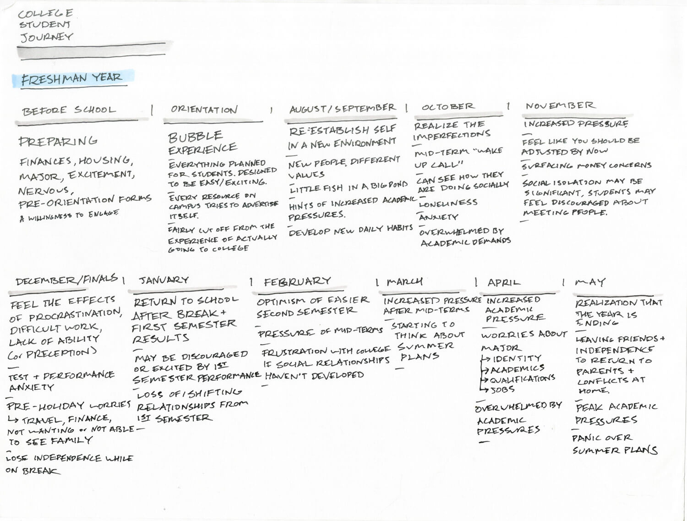
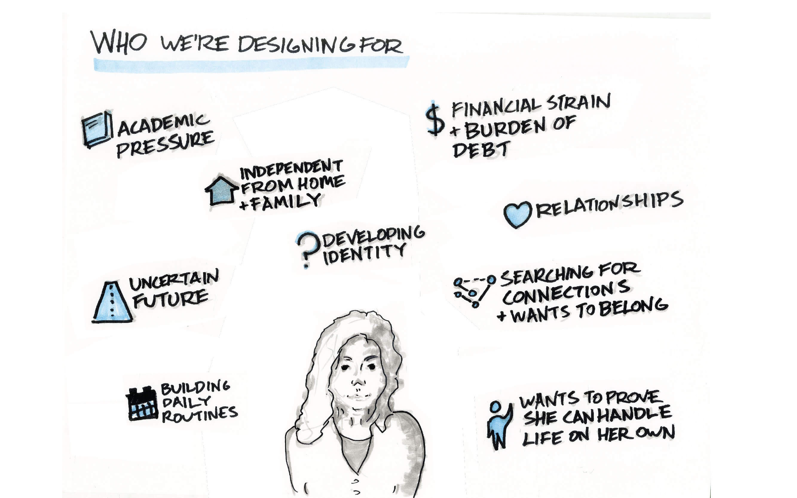
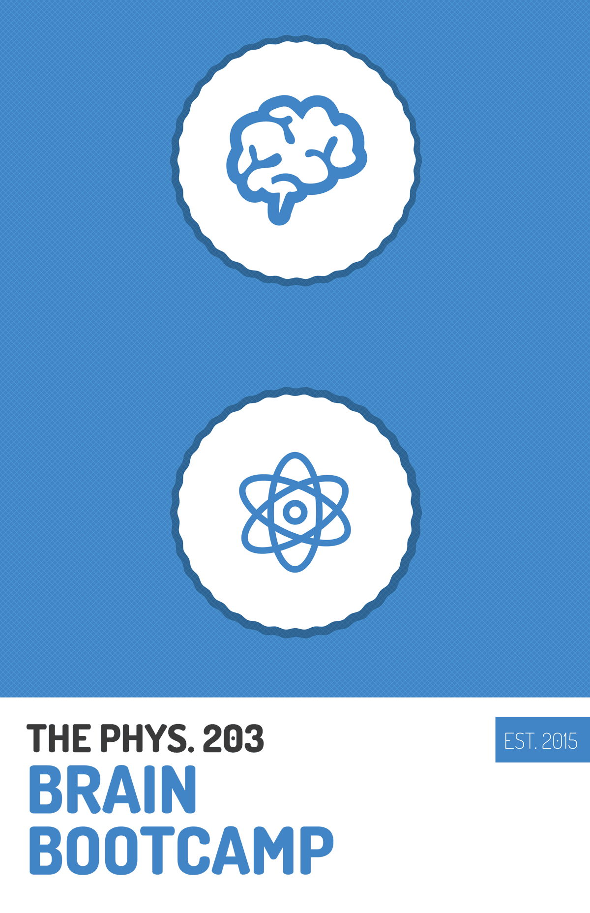
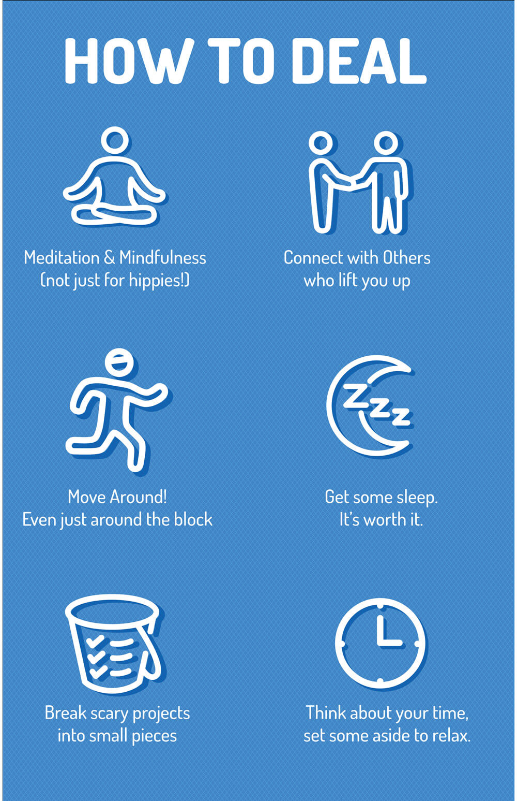
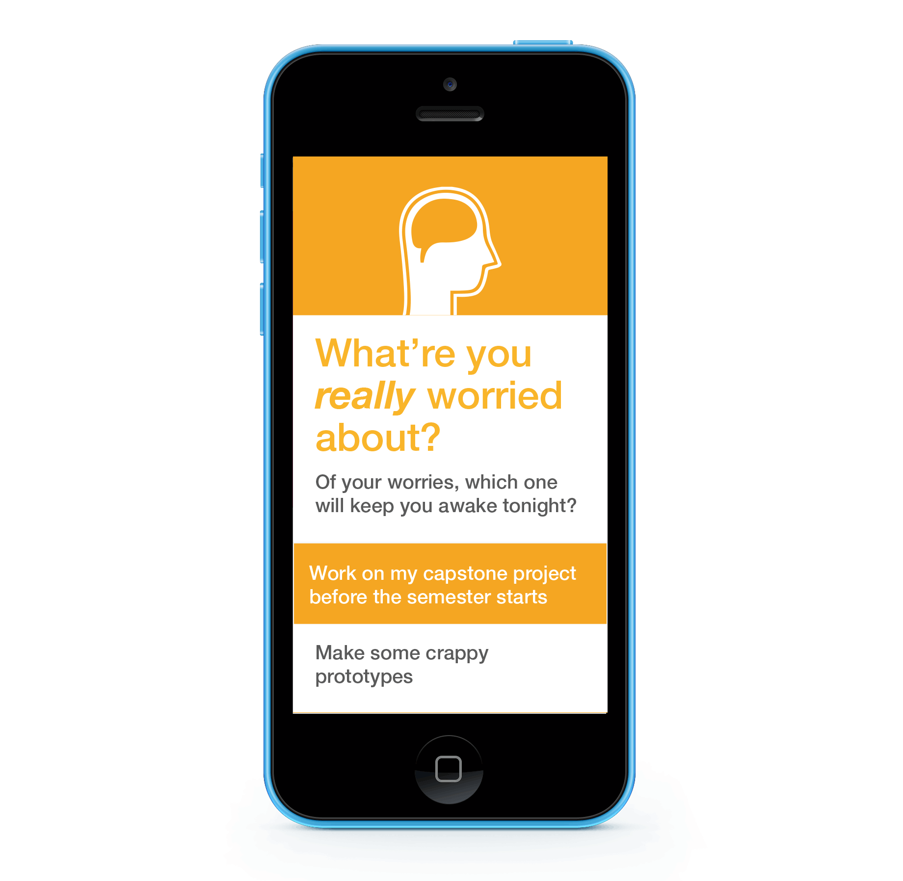
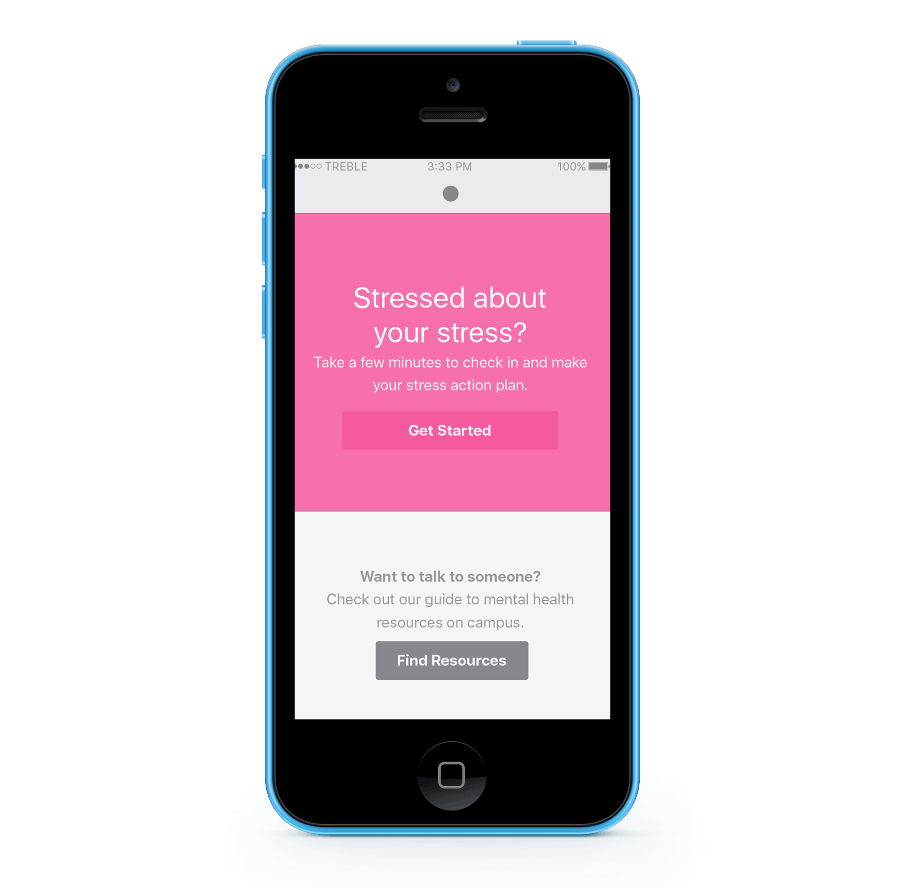
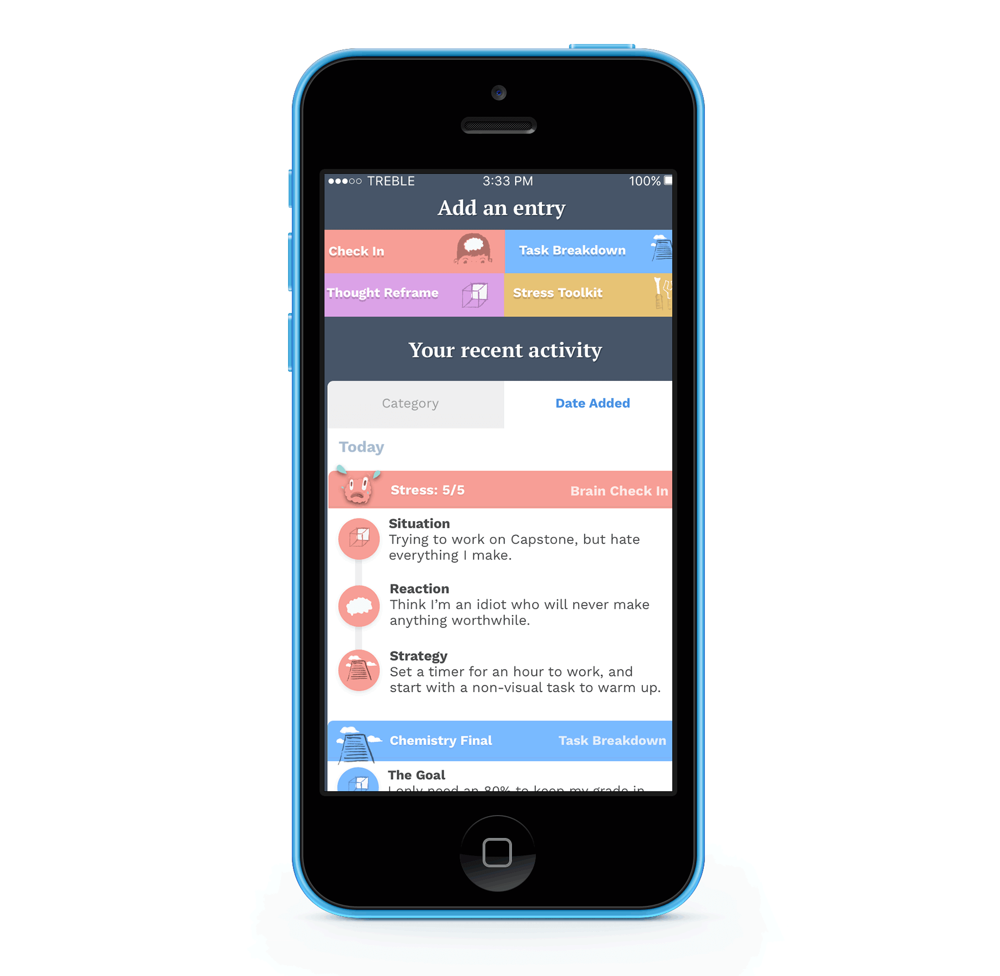

Problem Area
College students struggle to develop healthy coping mechanisms to manage stress from different sources. Existing resources tend to have high barriers to entry, with a formal, medical tone.
Outcome
Researched, designed and prototyped an app to provide college students easy access to proven stress management techniques.
Research
A deep dive into the mechanics of stress to find out why college is so stressful, and what can be done to cope.


“The message of this research is ultimately a positive one: eliciting the enhancing aspects of stress (as opposed to merely preventing the debilitating ones) may be, in part, a matter of changing one’s mindset.”
Rethinking stress: the role of mindsets in determining the stress response. Crum AJ, Salovey P, Achor S.
Secondary Research Summary
1. Feeling stressed is normal In a campus wide survey, 83.5% of University of Cincinnati students reported feeling overwhelmed at college.
2. Current resources aren't designed for widespread Use If every student who could benefit from counseling sought help, current resources couldn’t handle the demand.
3. Techniques from therapy could help almost every student Not every student has a mental illness, but almost every student could benefit from an increased ability to cope with stress.
4. Mindset Matters The way we think about stress and failure can dramatically impact how it affects us and how we react.

Expert Interviews
Gaining perspective on the issue by talking with the director of counseling services and a designer working with Arizona State University to promote student health.

Tow Yee Yau, PhD: Licensed Psychologist, CAPS, Director of Health and Wellness at UC


Barbara Barry, Designer at the Mayo Clinic Center for Innovation, working with Arizona State University on a student health project.
Two Types of Struggling Students
Teacups Students who have a tough time dealing with the failures and setbacks they experience for the first time at college. Crispies Students who have been burned out by the pressures and expectations they place on themselves.
Journey Mapping
After exploring the news, research and expert opinions, I wanted to look at this problem from a student's perspective.


Initial Concepts
My first approaches centered around a printed book given to students at the start of especially difficult classes.
While students found this information valuable, the book format seemed overly official and didn't actually help students implement stress management in their lives.


Better Understanding Students' Stress
After learning from my first designs, I wanted to gather more experiences from students themselves.
I created a simple worksheet to let students chart their stress levels over time as well as the behaviors that helped or hindered them. While not meant to be scientific, this sheets helped me start conversations with fellow students about how stress affected their lives, and what they did to manage the pressures of school.
Designing for Action
Focusing on two aspects of stress that students can take steps to change.

Reframe Negative Thinking Students often tie their identity to aspects of college, especially grades. If they don’t do perfectly in a class, it can feel like an attack on their identity. This type of thinking makes dealing with college especially difficult, since learning requires dealing with failure.
Change Unhelpful Habits The overly self-critical thinking patterns are often reflected in students’ behaviors and coping mechanisms. Students can often fall into patterns of procrastinating on large, ambiguous projects, or working constantly and never taking a minute to step back.
Reframe Negative Thinking

Monitor Stress You can’t change stress if you don’t know what’s causing it. Cognitive Behavioral Therapy often involves self-monitoring situations which trigger stress, and reflecting on how you reacted.
Reframe Thoughts Another technique from therapy, cognitive reframing is taking a negative, unproductive thought, and finding a more productive, realistic way to think about something.
Avoid Thinking Traps Negative thinking often results from cognitive distortions such as catastrophizing events. Identifying when your thoughts are falling into these traps helps you find more productive ways of thinking.
Avoiding Unhelpful Habits

Break Down Tasks Many of the struggles students have with productivity in college is getting started on large projects, especially if they’ve never done anything like them before. Finding bite sized tasks to start large projects is an often recommended plan.
Make a Specific Plan The act of recording a plan to act on something makes us significantly more likely to follow through. This effect is magnified if your commitment is public.
Focus on Your Motivation With the millions of distractions in a college student’s life, thinking about why you want to achieve something is an often neglected step to ensure working on the stressor gets prioritized.
App Ideation and Iteration
Exploring how these techniques could be translated to a digital tool for students to use in their everyday life.

-
Round 1: The One Hour Iteration
Applying the techniques I learned about breaking a task into small chunks of time, I set a timer for an hour, and prototyped a step by step flow to dealing with worries.
 -
Round 2: Explaining the Steps
Based on learnings from the first flow, the next prototype emphasized guidance, and making it clear to the student what the step they were about to do meant.
 -
Round 3: Visual Guidance
Based on learnings from the first flow, the next prototype emphasized guidance, and making it clear to the student what the step they were about to do meant.
-
Round 4: Emphasizing Inputs
Generally, the feedback was clear that shorter was better, so I focused on reducing the number of steps to complete. This iteration focused on making user input more distinct from descriptions and questions.
-
Round 5: Unbundling the Design
At this point, I realized that asking stressed out students to complete a 20 screen flow all at once wasn’t the most effective way to help them deal with stress. This iteration separated the main activities into four different sub-products.

What I Learned from Iteration
Focus on Flows, not Individual Screens Showing one state of a screen doesn't teach as much as showing a flow from start to finish.
Assume Students Won't Pay Close Attention Making actions clear and the visuals engaging are crucial to holding a time strapped, stressed out college student's attention.
Be Bite Sized Students won't spend an extended period of time working on their stress, they need tools that they can use with the spare two minutes they have before class.
Have Personality Avoiding the cold, informal nature of many college health resources was a must. This tool has to compete with Snapchat, Instagram and all of the other distractions in a student's life.
Visual Design and Illustration
Defining a visual tone that encourages action.


Final Designs
Combining the quirky visual language, fluid animations and bite sized ways to manage stress.
-
Mind Check In
Applying the techniques I learned about breaking a task into small chunks of time, I set a timer for an hour, and prototyped a step by step flow to dealing with worries.
-
Stressor Workout
Based on learnings from the first flow, the next prototype emphasized guidance, and making it clear to the student what the step they were about to do meant.
-
Tips
Based on learnings from the first flow, the next prototype emphasized guidance, and making it clear to the student what the step they were about to do meant.

{kind=link}